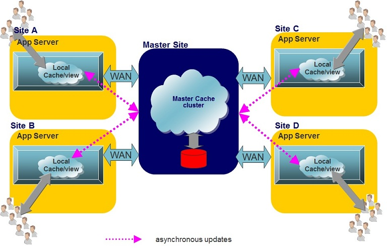

A common use case of the local cache or the local view is with remote geographical sites where most of the activities are read only. In this case each site may use an application server or a web application running a local view/cache caching a subset of the data or the entire data set.

With this approach there is one Master cluster storing the entire data in-memory, loading its data from the database (on demand or pre-fetch). The master site data is highly available (running primary-backup data-grid topology) where new remote sites can be started on the fly (Hub & Spoke model).
Any read operations conducted at each site by the local users will be served first from the local cache. If the data had not been loaded into the local cache, it is read from the master cache (over the WAN) and loaded into the local cache. The next read operation for the same data item will not require any remote call to the master cache cluster.
Write/update/delete operations will be conducted against the remote master cache in a synchronous manner. This means they will suffer from the latency between the local site and the remote master cache since they are fully acknowledged when the master cache will be fully committing these.
For more advanced WAN based topologies, see the Multi-Site Replication over the WAN section.